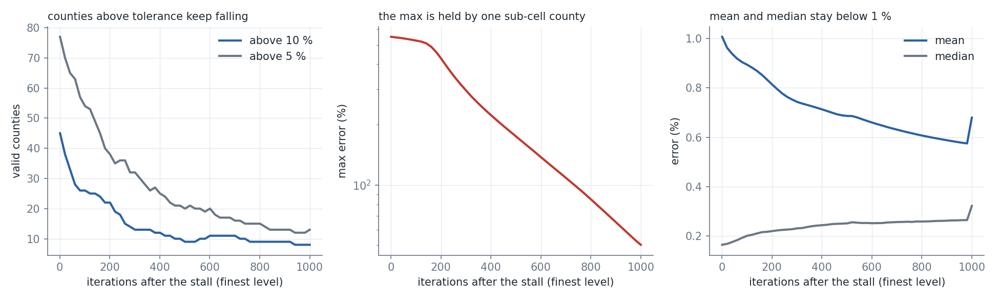

With validity="repair-crossings" the county ladder has no invalid polygons and its mean error falls from 1.37 to 1.08 %, but every level still ends STALLED and 45 valid counties stay above 10 %. Continued for 1,000 iterations they fall to 8 (mean 1.0 to 0.68 %). The earlier gain (mean 1.3 to 0.11 %) came from the normalization on invalid polygons; the real gain of continuing is smaller, and the unresolved tail is sub-cell counties.
ladder_modes.py <dir> runs the ladder per validity mode, continue_valid.py <dir> continues the finest level of the "repair-crossings" run with the stall rule off and snapshots every 20 iterations, analyze.py replays candidate progress measures on those snapshots, fig.py draws the figure.
| mode | time | levels (grid: status, iterations) | invalid | mean / median / p95 error | above 10 % | max error |
|---|---|---|---|---|---|---|
| "check" | 39 s | 512: stalled 540, 1024: stalled 110, 2048: stalled 170 | 57 | 1.37 / 0.25 / 2.44 % | 60 | 523 % |
| "repair-crossings" | 47 s | 512: stalled 500, 1024: stalled 80, 2048: stalled 200 | 0 | 1.08 / 0.20 / 2.63 % | 45 | 548 % |
| "repair-quadtree" | 36 s | 512: stalled 760, 1024: completed 240 | 0 | 5.34 / 0.24 / 27.99 % | 303 | 540 % |
The quadtree run ended at grid 1024 (the ladder has two levels with it); its numbers are at that grid and are not comparable with the other two.
| iterations after the stall | mean | median | above 10 % | above 5 % | max |
|---|---|---|---|---|---|
| 0 | 1.01 % | 0.17 % | 45 | 77 | 549 % |
| 200 | 0.81 % | 0.22 % | 22 | 38 | 428 % |
| 500 | 0.69 % | 0.25 % | 9 | 20 | 175 % |
| 1000 | 0.68 % | 0.32 % | 8 | 13 | 50 % |
The continuation takes 109 s (the ladder took 47 s). Of the 45 counties above 10 % at the stall, 7 remain above it, their median falling from 14.9 % to 1.9 %. The 8 counties above 10 % at the end all shrink by more than 10 times in area. The median error of all counties rises from 0.17 to 0.32 % while the tail falls. The returned best iterate of this run (iteration 992) has a mean of 0.35 % and 113 counties above 1 %, the final iterate (1000) a mean of 0.68 % and 651 above 1 %; the error is not monotone in the iteration.
The stall rule (patience 4 cycles, efficiency 0.05) applied to other measures of the 20-iteration snapshots (a cycle here is 20 iterations, the library's is 10, and moved is taken as 0.1 per iteration):
| measure | stalls after |
|---|---|
| max error | never within 1,000 iterations |
| count of valid counties above 10 % | 581 iterations |
| sum of log2(1 + error) over the counties above 10 % | never within 1,000 iterations |
| median error of the counties that were above 10 % at the start | never within 1,000 iterations |
validity="repair-crossings" is used: the earlier gain from continuing (mean 1.3 to 0.11 %, 60 to 6 above 10 %) was measured with targets normalized on a set that contained invalid polygons and is not reproduced. With valid polygons the gain is mean 1.0 to 0.68 % and 45 to 8 counties above 10 %, for 2.3 times the ladder time.STALLED although the counties above tolerance keep improving; the three candidate measures that follow the lagging counties would continue for 581 to more than 1,000 iterations, which is 1 to 2 minutes on counties. (2) CONVERGED stays unreachable: the max is held by sub-cell counties (548 % at the stall, 50 % after 1,000 iterations).
The finest county level continued for 1,000 iterations after its stall (validity="repair-crossings", no invalid polygons). Left: valid counties above 10 % and above 5 %. Middle: the maximum error. Right: mean and median error.